Plan a new bike
Choose your discipline and budget. The app puts together a coherent build that you can adjust part by part – or you build it up yourself from the frame.
The web app for your mountain bike
CrankScore checks whether the parts on your mountain bike work together – by dimensions, standards and manufacturer approvals. It finds parts that fit, adapters included, compares them with yours and plans what to buy.
766 parts125 brands7 disciplines
No account · Your data stays on your device · Works offline


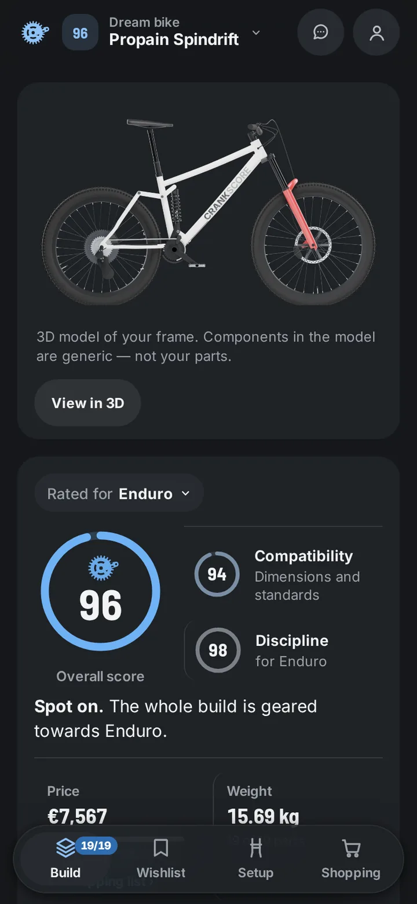
You don’t need to be a mechanic. CrankScore knows the standards; you decide what goes on your bike. Three modes, one check.
Choose your discipline and budget. The app puts together a coherent build that you can adjust part by part – or you build it up yourself from the frame.
Enter what’s fitted. The check shows what doesn’t work together and which upgrades actually make a difference for your goal.
Enter the parts from the listing, plus model year and condition. The app estimates whether the price is fair. It’s no substitute for seeing the bike.
Your bike at the top, the score beside it, the check below. On your phone or your computer – in the browser, nothing to install.
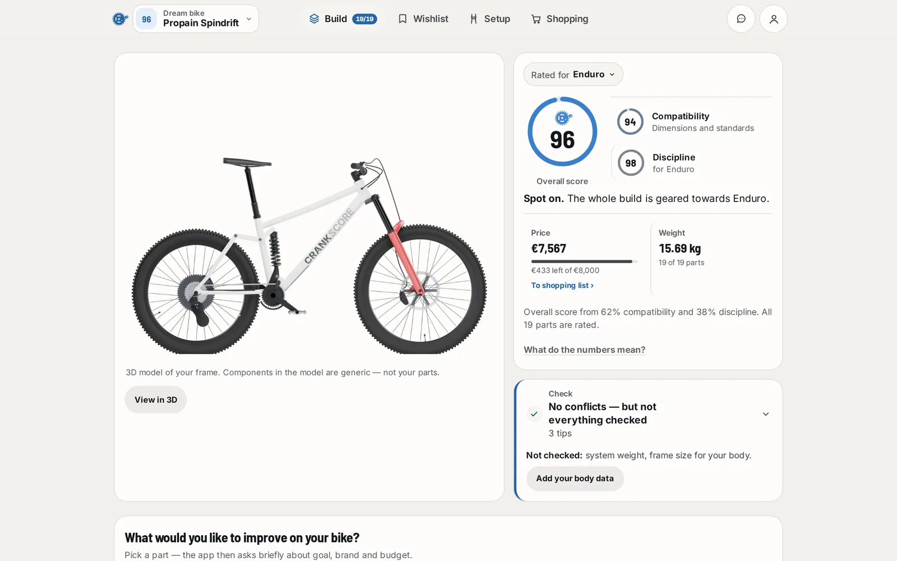
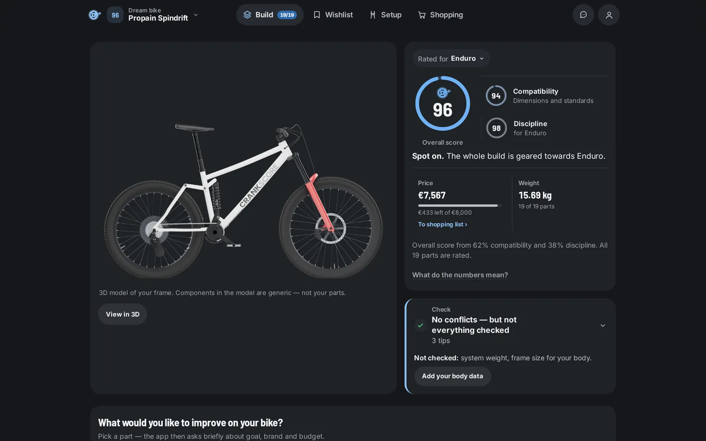
Compatibility measures whether everything fits mechanically; discipline, whether the parts suit how you ride. Together they make the score from 0 to 100.
Conflicts, compromises and missing details sit right below the bike – along with anything that hasn’t been checked.
“What would you like to improve?” takes you straight to the part finder – with goal, brand and budget.
No account, no sign-up. You don’t need to know dimensions and standards – the app knows them for the parts in its catalogue.
Plan a new bike, enter your own or a used listing. Start with the frame – it decides a lot.
Red means the bike can’t be built this way. Amber: it works, with a compromise or an adapter. Conflicts lead straight to a fix.
Goal, brand, budget – three quick questions. The app shows parts that fit, compares them with yours and includes adapters and accessories in the cost.
Try a part in your build before you commit. The shopping list shows what you actually need to buy.
Every frame comes with fixed dimensions. CrankScore checks the parts you fit against them – with more than 20 rules, from the axles to the seatpost.
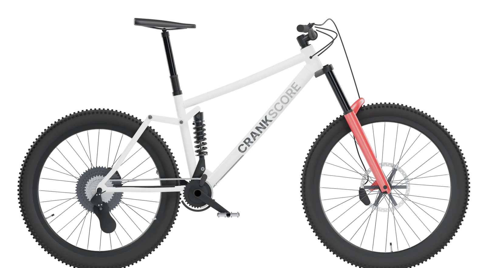
Figures from the app’s catalogue for the Propain Spindrift frame. The 3D model recreates the frame; components are shown generically, and the CrankScore lettering replaces the manufacturer’s logo.
Each feature answers a question that comes up when you work on a bike – with catalogue data rather than gut feeling.
Will that SRAM cassette fit your Micro Spline freehub? The check shows what doesn’t work together and why – and when the fix is just a different version of a part you already have, it says so.
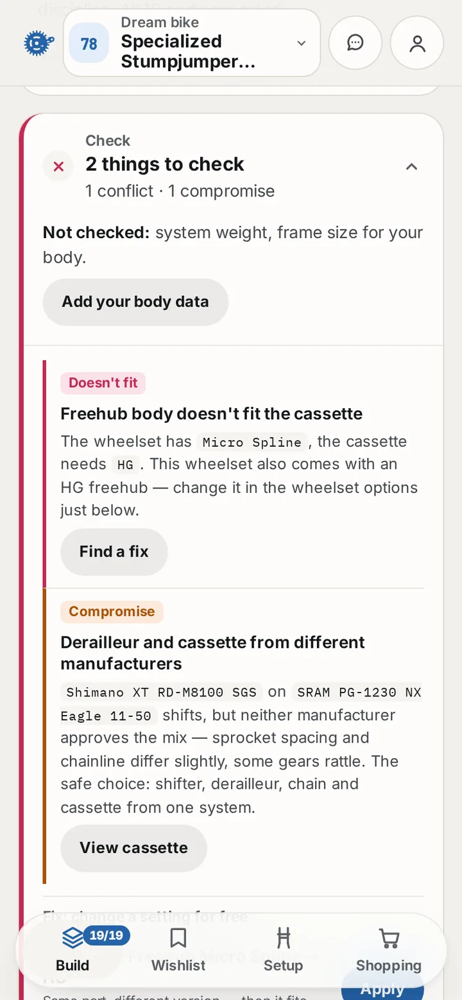
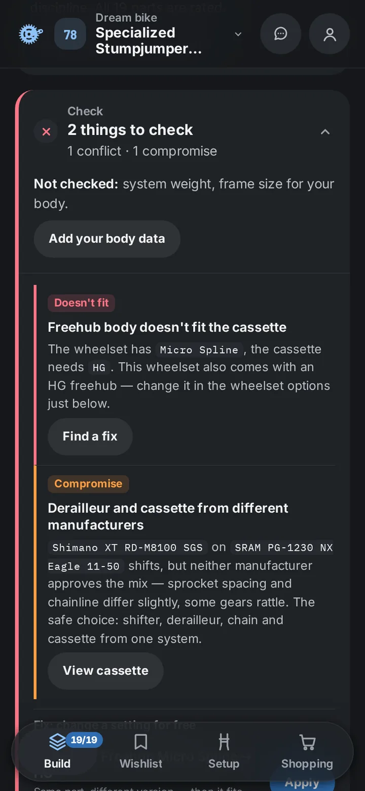
Say what should improve, which brands you like and what you want to spend. The app shows parts that fit – and only ones that are better for your goal and no worse anywhere than what you have.
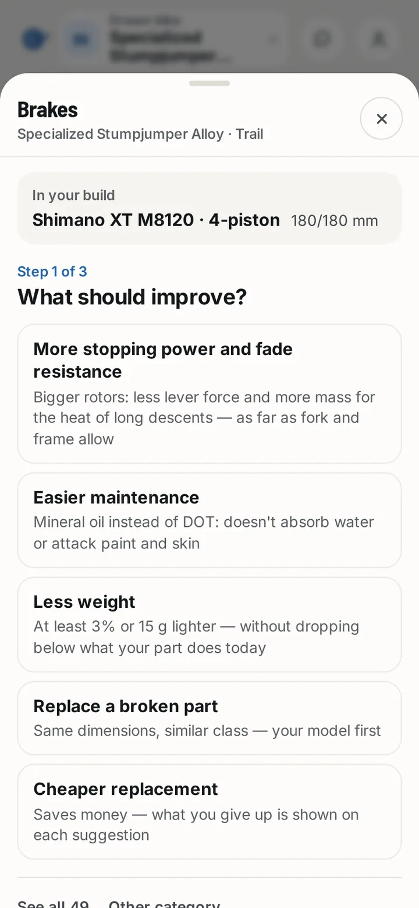
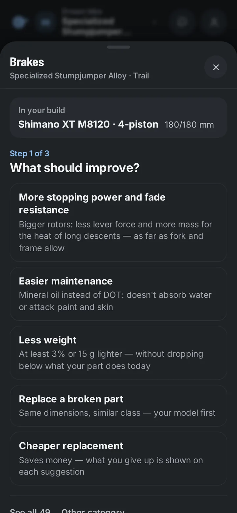
Your part and the new one side by side, value by value, with a verdict for your goal. If the switch needs an adapter, the app picks it: the right part number from your brake’s brand, front and rear separately, with the reason.
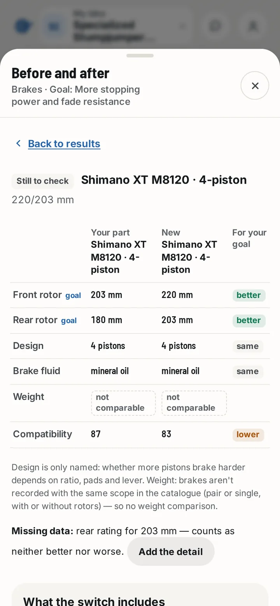
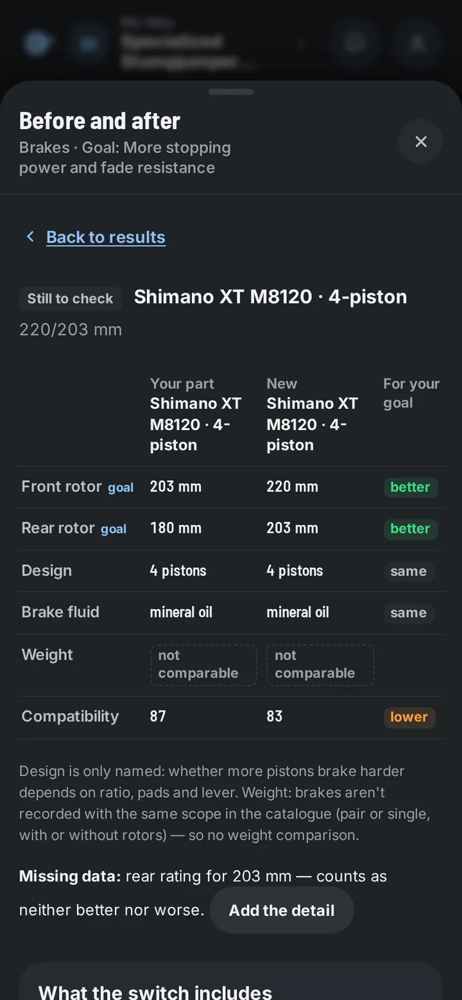
Save parts for each bike and move them through four stages: saved, trying in build, buying, fitted. A trial is only a preview – your real part stays saved until you commit.
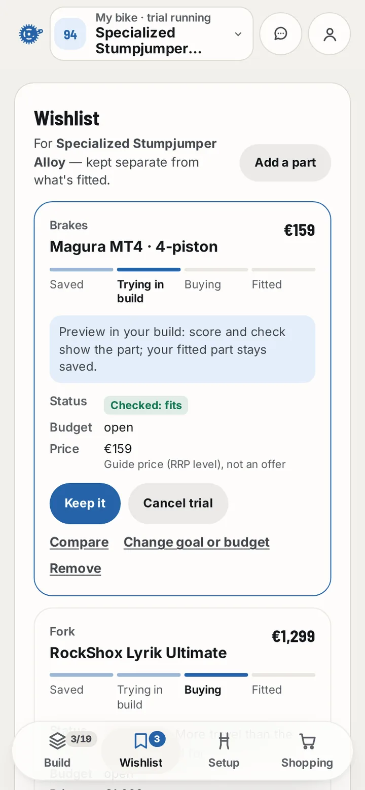
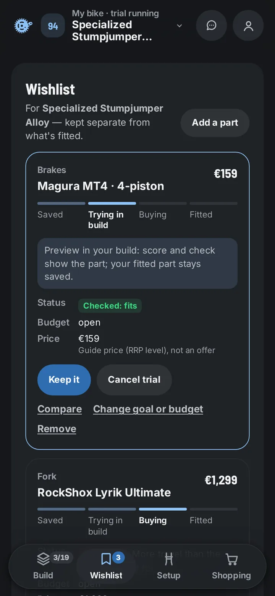
The shopping list gathers every part with its price and adds up the total. Copy it as text and take it to your bike shop. You order from the shop – CrankScore doesn’t sell anything itself.
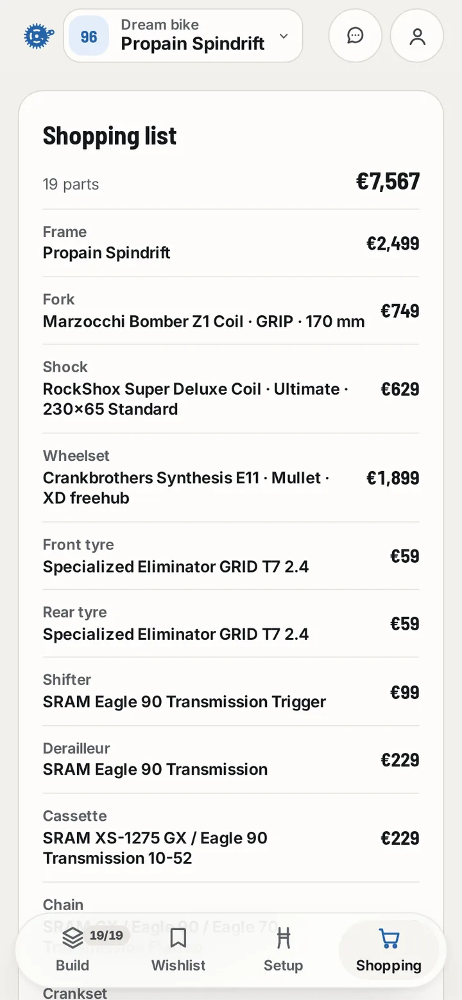
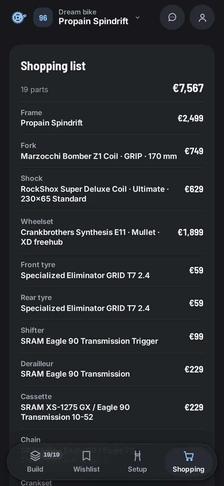
Starting values for fork and shock: sag target, rebound and compression in clicks, counted the way your dial is marked. The app only gives an air pressure when it’s backed by data.
Questions about your bike and the tech behind it, answered on your device – no AI service in the background. Free includes 10 questions a day.
Each bike keeps its own build, wishlist and history. Free gives you one bike per mode, Pro as many as you like.
No app store needed: add CrankScore to your home screen. After the first load, it works without a connection too.
For the Propain Spindrift, the app shows the bike as a 3D model you can rotate, with assemblies highlighted one by one. Other frames appear as a diagram drawn from catalogue geometry.
The catalogue includes e-MTB frames. The app checks whether the crank fits the motor spindle and whether brakes and wheels can take the extra weight.
A Specialized Stumpjumper Alloy with a RockShox Pike and Shimano XT M8120 brakes, a 203 mm rotor at the front and 180 mm at the rear. Goal: more stopping power and fade resistance.
Figures from the app as of 11 Oct 2026. Prices are guide prices at RRP level, not offers.
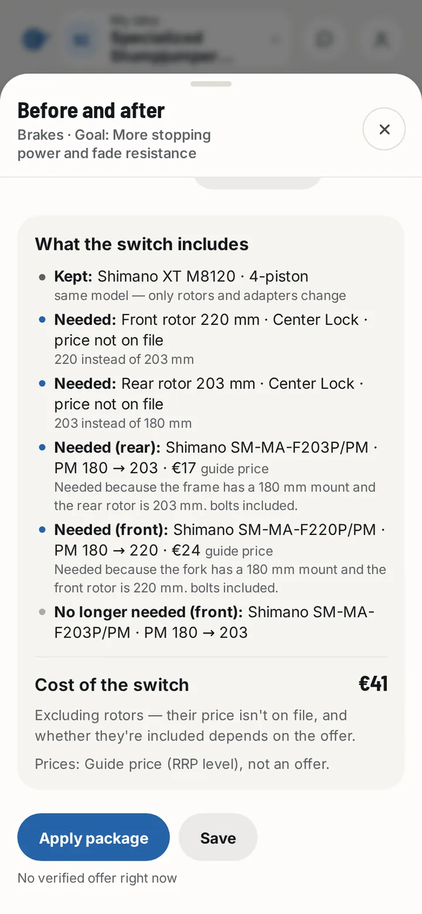
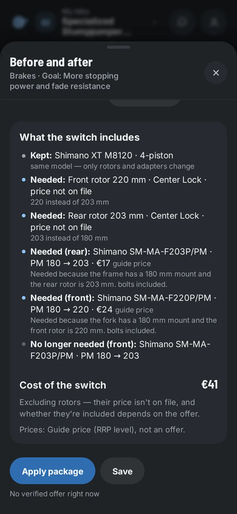
CrankScore is there to help you avoid buying the wrong part. That means being open about what the app knows and what it doesn’t.
The app works with guide prices at RRP level. It only shows a “View product” link when there’s a verified offer for exactly that version – recent, in stock and dated.
If the catalogue lacks a detail, such as your frame’s brake mount, the app asks you for it. Until then it counts as neither better nor worse.
CrankScore doesn’t sell parts. Which part fits is decided by the check. If a link is a partner link, it’s marked “Ad”.
No account, no tracking. Bikes, measurements and photos live only in your browser’s storage. For Pro, only the licence code goes to Lemon Squeezy to be checked.
Free does almost everything. Pro adds what keen home mechanics tend to need.
€0
No cost, no account
€6.99a month
or €3.99 a month billed yearly (€47.88 a year)
You unlock Pro with the code from your purchase email – no account needed. Payment is handled by Lemon Squeezy. Pro will be available once the app launches.
CrankScore is in testing. We’ll release the app once the catalogue and the check are solid enough for you to rely on. When that happens, you’ll find “Open the app” here.
Free costs nothing and needs no account. Pro costs €6.99 a month, or €3.99 a month billed yearly (€47.88 a year), and adds unlimited bikes, the suspension setup and the guide with no daily limit.
No. You open the app in your browser and get started. Pro doesn’t need an account either: you unlock it with the code from your purchase email.
Only on your device, in your browser’s storage. If you clear your browser data or switch devices, it’s gone – so back it up to a file in the app first. For Pro, only the licence code goes to Lemon Squeezy to be checked, at most once a day.
Yes. After the first full load, the app works without a connection, in the workshop or out on the trail. Pro stays active offline for 14 days.
No app store needed: on an iPhone, tap Share in Safari, then “Add to Home Screen”. On Android, open the Chrome menu and choose “Install app” or “Add to Home screen”.
The app works with guide prices at RRP level and prices older model years lower. If there’s a verified offer from a partner shop for exactly that version, it shows that price with its date and shipping. The price in the shop is always what counts.
It works with dimensions, standards and manufacturer approvals from the catalogue. If a detail is missing, the app asks for it, and anything it doesn’t check is listed right below the score. Before you buy, the manufacturer’s spec sheet has the final say.
For mountain bikes from XC, trail and enduro to downhill, dirt, slopestyle and trials – hardtails, full-suspension bikes and e-MTBs. The catalogue holds 766 parts from 125 brands.
No, and that’s deliberate: CrankScore is a web app that runs in your browser, on your phone or your computer.
The website and the app are available in German and English, with prices and numbers in the right format.
Open CrankScore in your browser, pick your bike and see what fits.CrankScore is in testing. Know someone who’s planning or upgrading a bike? Share this page with them.
Link copiedCouldn’t copy the link. The address is crankscore.de.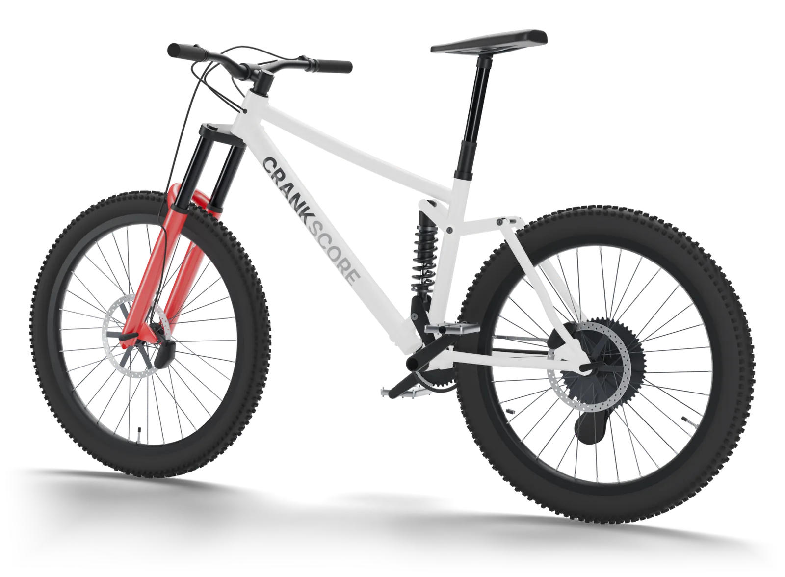